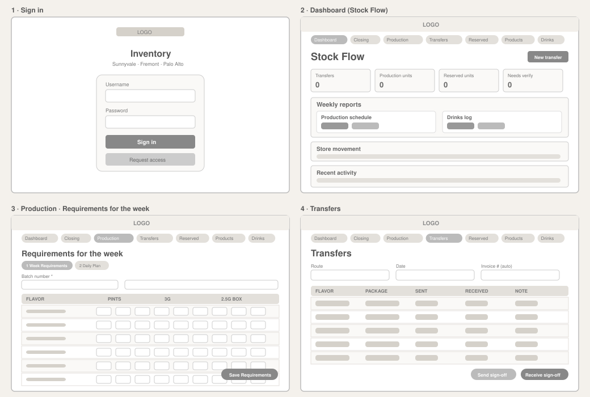

Pints of Joy
Part 2 of the Inventory App: an operations app for a real ice-cream business, designed from their weekly Excel routine and now running their week.

Design thinking
- 1Empathize
Sat with the owner and manager to see their real week: count stock, type every number into Excel, run the maths.
- 2Define
A manual weekly ritual that ate hours, even with formulas, and could never show a trend.
- 3Ideate
Count once, let the app analyse stock and draft the weekly production plan, and keep the manager in charge of the final call.
- 4Prototype
I owned UX and design, Vijay built the AI layer. A first working version went to the manager early.
- 5Test
Every week I walked the manager through the latest build in his real workflow and folded his feedback into the next.
One factory and three stores, all planned from a hand-typed spreadsheet every week.
Goal: cut the hours of counting and planning, without taking the manager out of the loop.
Flow chart
- Sign inper store
- Stock Flowdashboard
- Count stock
- App drafts plan
- Manager reviews
- Requirements saved
- Productionper store, per day
- Transferssend and receive sign-off
- Reserved
- Closingand consumption
- Products
- Insights
- People & taskslogging and assignment
Wireframe
The redesigned structure in grayscale: sign-in, the dashboard, the production grid and transfers.
Everything is a sheet you can fill in, matching how the team already worked in Excel.

User interface
Sheet-style entry for production, transfers, reserved and closing keeps the Excel muscle memory, so day one feels familiar.
Real flavours, package types, stores and auto-numbered invoices (TRF-YY-NNNNN) replace generic fields, and each store sees only its own data.


Testing: before and after
The first version proved the idea. Using it every week, the manager found the sidebar and marketing headline got in the way of the work.
A top row of icon pills, a plain “Stock Flow” title with weekly report cards, per-store planning, and a floating Save Requirements button.


Design system
Type
Components
- Sheet-style grids
- Icon pill navigation
- Weekly report cards
- Floating save button
- Send and receive sign-off
- Auto-numbered invoices
- Role-based access per store
Outcome
The best decisions came from watching someone use the app in their actual week. It grew from an inventory tracker into the tool the week runs on, and it is the project I'm proudest of because it didn't stay in Figma.